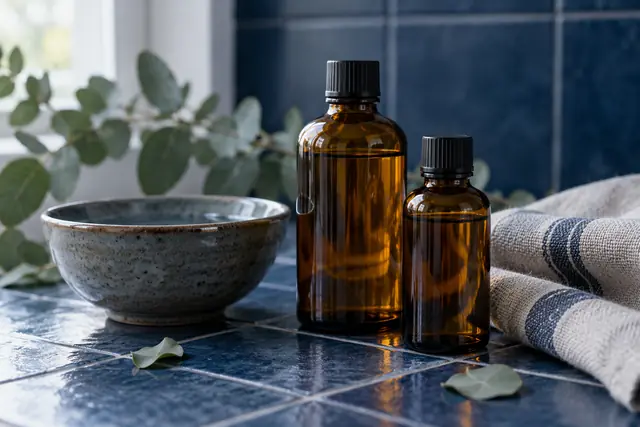
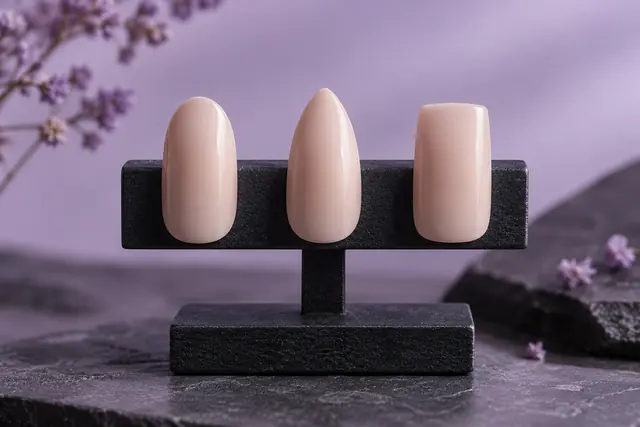
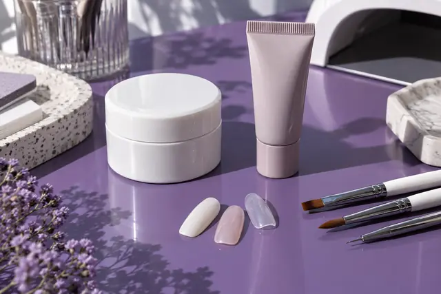
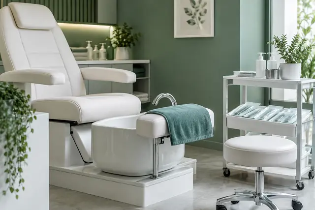

MADBEAUTY ·2026-10-12
6 nauji gidai su skirtingomis nuotraukomis
Patvirtintas; paketas eksportuotas, tikras diegimas dar nepriimtas. Iš viso paruošti 131 iš 295 suplanuotų gidų.
Publikavimas 2026-12-24–27 d., 10:00/16:00 Lietuvos laiku. Ankstesnės 129 revizijos ir 299 publikavimo akimirkos išsaugotos.
Tikslios publikavimo datos ir valandos CSV · Paketo ir diegimo būsena

2026-12-24 · 10:00 Lietuvos laiku
Sužinokite, ką gali reikšti aromaterapinio masažo pavadinimas, kaip atskirti masažo darbą nuo priemonės ir papildomų ritualo dalių, ir ką palyginti prieš renkantis.
Patvirtintas; paketas eksportuotas, tikras diegimas dar nepriimtas
2026-12-24 · 16:00 Lietuvos laiku
Palyginkite ovalo, migdolo ir kvadrato kontūrus, tada pasirinkite ilgį pagal norimą vaizdą ir kasdienes veiklas. Nėra vienos formos ar ilgio, kuris tiktų visiems.
Patvirtintas; paketas eksportuotas, tikras diegimas dar nepriimtas
2026-12-25 · 10:00 Lietuvos laiku
Palyginkite tris konstrukcines sistemas ir atskirkite nagą formuojantį produktą nuo spalvinio užbaigimo. Gamintojų pavyzdžiai parodo, kuo skiriasi jų paruošimas ir paskirtis.
Patvirtintas; paketas eksportuotas, tikras diegimas dar nepriimtas
2026-12-25 · 16:00 Lietuvos laiku
Kuo klasikinis, aparatinis ir kombinuotas pedikiūras skiriasi? Palyginkite įrankių principą, odai ir nagams skirtus darbus bei higienos svarbą.
Patvirtintas; paketas eksportuotas, tikras diegimas dar nepriimtas2026-12-26 · 10:00 Lietuvos laiku
Palyginkite karščiu formuojamą šukuoseną su produkto procedūra: darbų apimtį, produkto informaciją ir pasirinkimo ribas.
Patvirtintas; paketas eksportuotas, tikras diegimas dar nepriimtas2026-12-27 · 10:00 Lietuvos laiku
Palyginame du datuotus SPA VILNIUS pasiūlymus poroms ir parodome, kaip atskirti bendrą ritualą nuo vienalaikių procedūrų, nepadarant prielaidų apie specialistų grafiką ar privatumą.
Patvirtintas; paketas eksportuotas, tikras diegimas dar nepriimtasOriginalios redakcinės iliustracijos nėra konkretaus teikėjo ar kliento darbai. Tekstai parengti GPT-6 Luna / xhigh, faktai, nuotraukos ir galutinis vaizdas tikrinti agento; autorius Madbeauty redakcija.